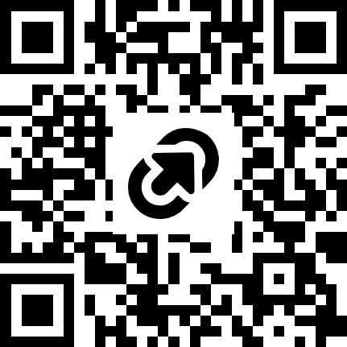

Helping Someone 💙
Build a Prosthetic Arm
Engineers don't just build cool things — they build things that help people. Today you'll build a robotic prosthetic arm and program it with a button, a motor, and a color sensor.
What Is a Prosthetic?
A prosthetic is a human-made body part — like an arm, hand, or leg — for someone who was born without one or lost one. A good prosthetic gives a person back the power to grab, hold, walk, and do.
Prosthetics Are Ancient — and Amazing
3,000 years old
Archaeologists found a wooden prosthetic toe on an Egyptian mummy — one of the oldest prosthetics ever!
Blade runners
Paralympic sprinters run on curved carbon-fiber blades that store and release energy like a spring.
Mind control
Some bionic arms read tiny electrical signals from a person's muscles — think "close hand" and it closes!
Kids Are Part of This Story
3D-printed hands
Volunteers around the world 3D-print low-cost prosthetic hands for kids — some cost less than a video game, instead of thousands of dollars.
Hero arms
Some kids' prosthetic arms are designed like superhero gear — with custom covers, lights, and colors they pick themselves.
Lesson Goal
Today I will build a prosthetic arm that can push and hold, and program it using a button, a motor, and a color sensor — so the arm responds to a person, just like a real prosthetic.
Two Builds, One Mission
🦾 Arm Holder
The wearable part — it holds the arm steady, like the socket of a real prosthetic.
📄 Arm Holder guide📱 Got an iPad?
Scan to open the build instructions right on your screen:

Meet the Color Sensor 🎨
It sees color
Point it at something and it can tell red from green from blue.
It's an input
Like the button, it gives the Hub information to react to.
Why it matters
Real bionic hands use sensors too — to know how hard to grip!
Make the Arm Respond
Button = push
The person presses → the arm pushes. WHEN → DO, just like yesterday.
Color = command
Green card = go. Red card = stop. The arm obeys colors!
Question
Challenge: Help a Teammate
Question
After Testing: Reflection
Quick Lesson Flow
Before Building
- Ask: what is a prosthetic? Who uses them?
- Share the cool facts (Egypt, blades, mind control, 3D-printed hands).
- Show the two build guides (arm holder + pusher).
- Introduce the color sensor as a second input.
During / After Building
- Build holder + pusher; wire motor A, color sensor B.
- Program button event, then color events (green go, red stop).
- Run the Help-a-Teammate challenge; swap wearers.
- Reflect on empathy: designing FOR someone.